Technical Note
相机标定的核心目的有两个：
建立相机成像几何模型：建立物体从三维世界映射到相机成像平面这一过程中的几何模型，这一过程最关键的部分就是要得到相机的内参和外参。
矫正透镜畸变：透镜成像会造成畸变，计算并利用畸变系数来矫正这种像差。
本质问题是：如何从像素坐标恢复真实空间中的几何关系。
点是如何从世界到像素的？整个过程可以理解为一个连续的坐标变换链：
世界坐标系 -> 相机坐标系 坐标转换
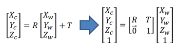
相机坐标系 -> 图像坐标系
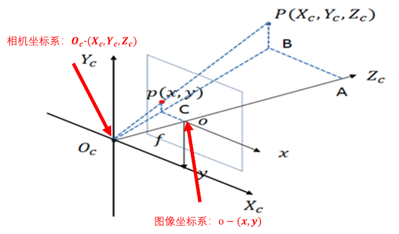
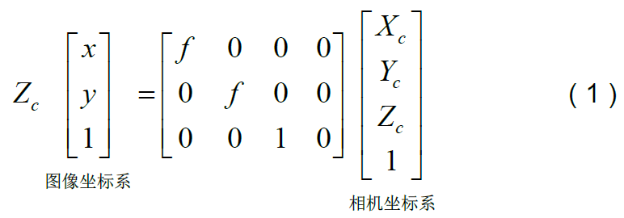
世界坐标系 -> 相机坐标系 原点不同（图像中间，图像左上角），单位不同（mm，像素）
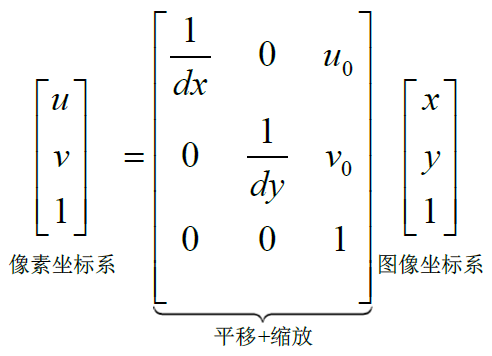
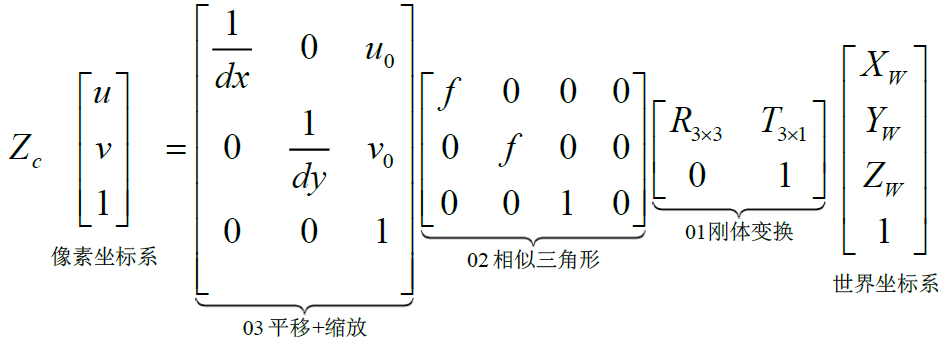
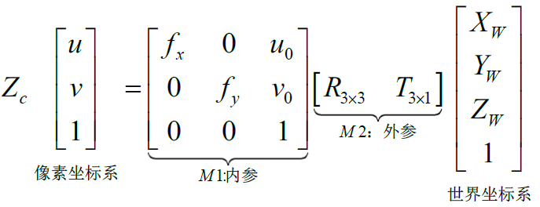
Note 归一化平面:图像坐标系的等比缩放，f=1的情况
单应性变换：描述物体在世界坐标系和像素坐标系之间的位置映射关系，对应的变换矩阵称为单应性矩阵。在图像校正、图像拼接、相机位姿估计、视觉SLAM等领域有非常重要的作用
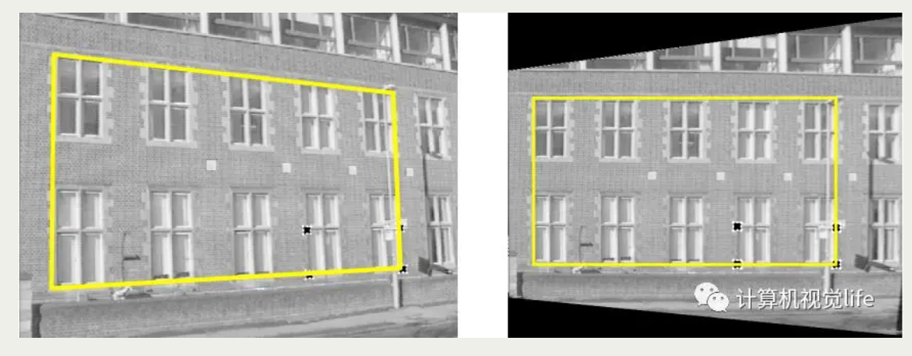
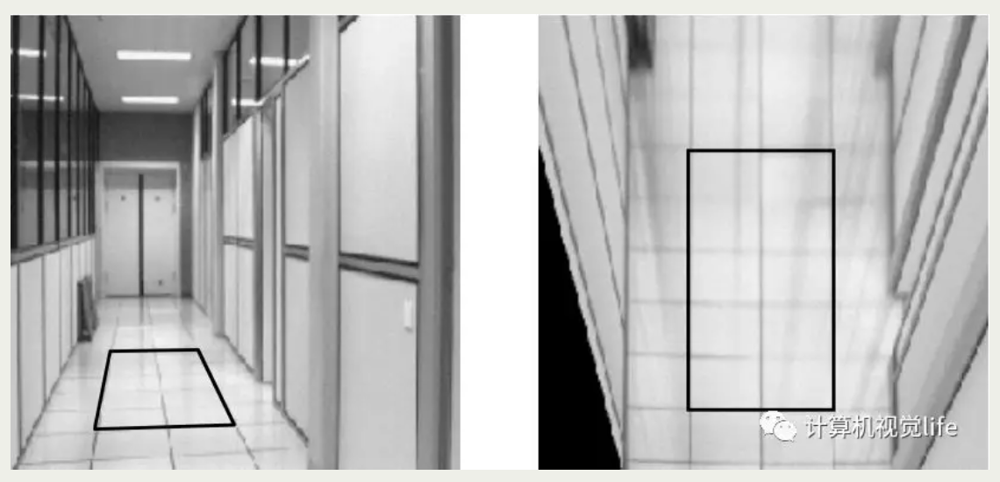
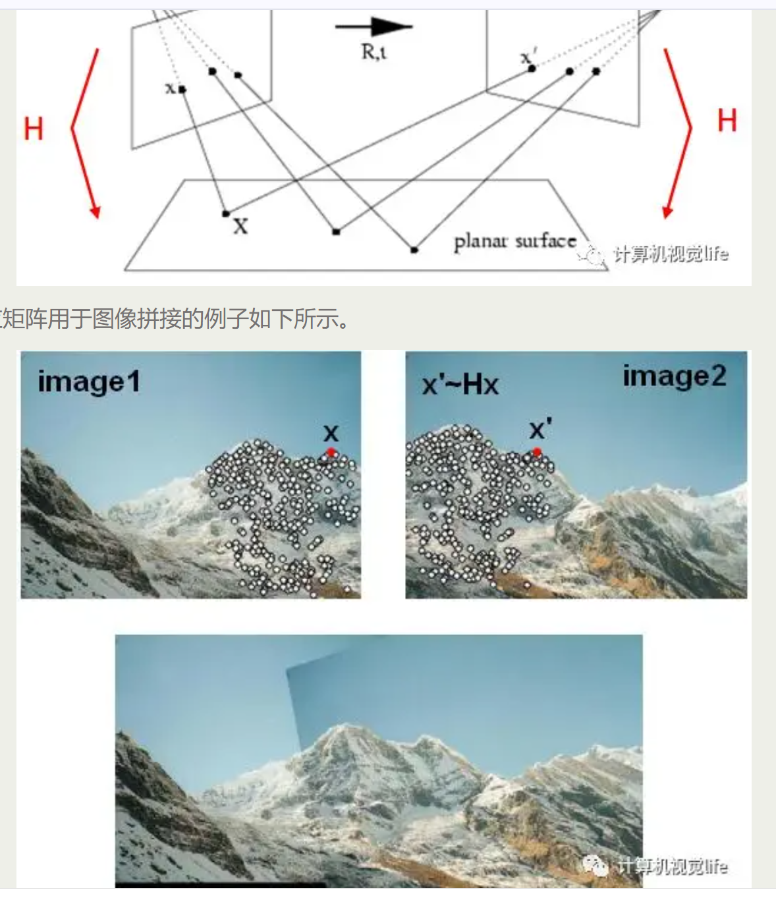
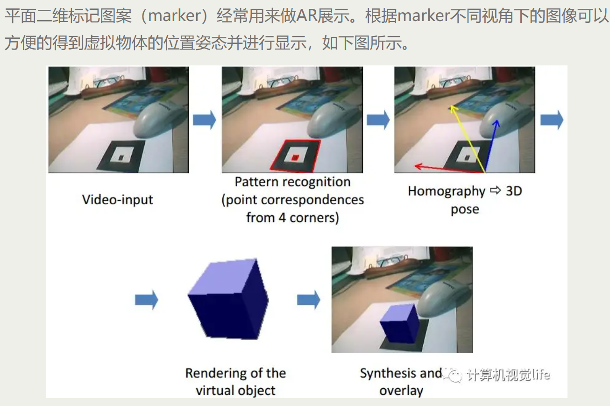
单应矩阵H有几个自由度？ 8个，因为这里使用的是齐次坐标系，也就是说可以进行任意尺度的缩放。齐次坐标：齐次坐标就是用N+1维来代表N维坐标，我们可以在一个2D笛卡尔坐标末尾加上一个额外的变量w来形成2D齐次坐标，因此，一个点(X,Y)在齐次坐标里面变成了（x,y,w），并且有X = x/w Y = y/w 把齐次坐标转化为笛卡尔坐标的方法是前面n-1个坐标分量分别除以最后一个分量即可。 8自由度的H我们至少需要4对对应的点才能计算出单应矩阵。这也回答了前面图像校正中提到的为何至少需要4个点对的根本原因。但点对中都会包含噪声，一般都大于4个点对，上述方程组采用直接线性解法通常很难得到最优解，所以实际使用中一般会用其他优化方法，如奇异值分解、Levenberg-Marquarat（LM）算法
当标定板是平面时，世界点与像素点之间可以通过单应矩阵建立关系。至少需要 4 对点才能求解，并通常结合优化方法获得更稳定结果。
真实镜头会产生径向畸变和切向畸变。标定的过程就是通过建立数学模型，并利用非线性优化估计参数，从而将弯曲的像平面“拉直”。
径向畸变：镜头中间厚四周薄，越靠近边缘光线越扭曲（EX.鱼眼镜头)
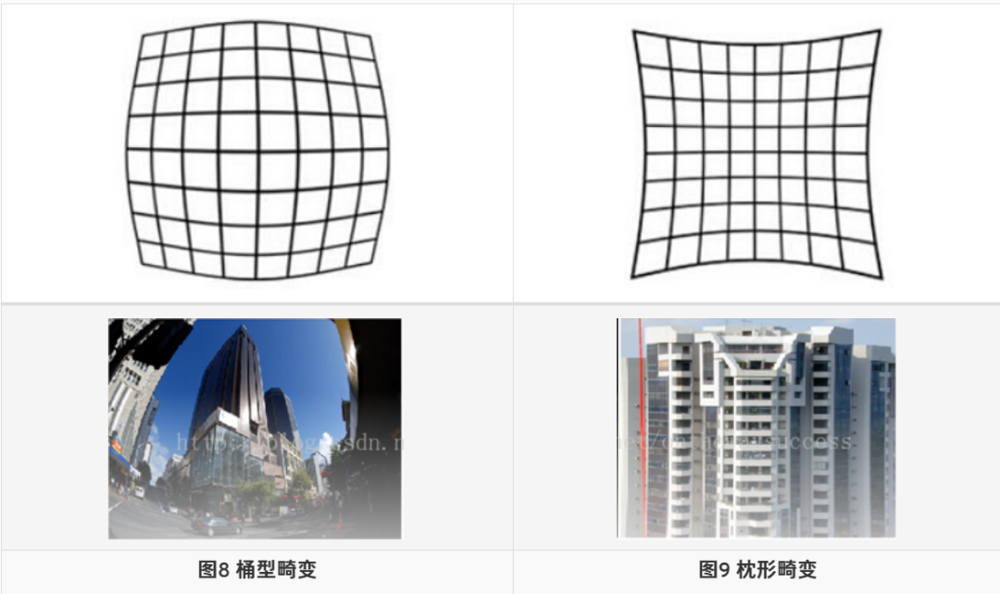
常用r=0处的泰勒级数展开的前几项来近似描述径向畸变
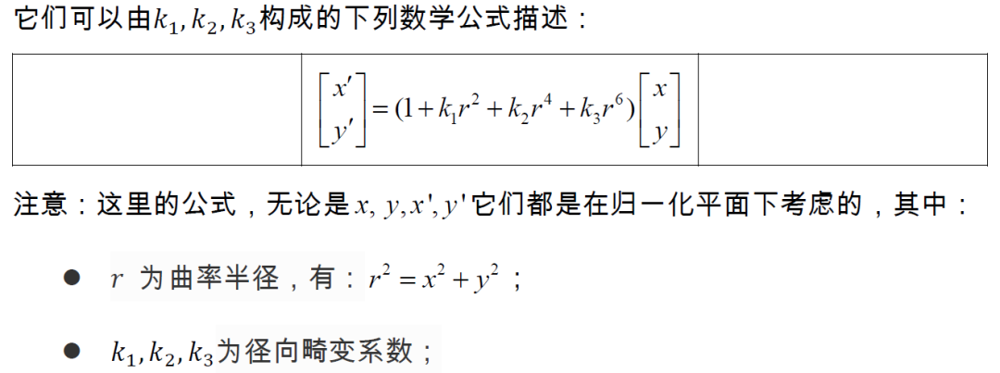
切向畸变：成像平面与透镜平面不平行，产生了透视变换
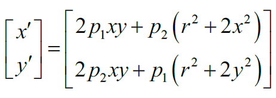
合并考虑两种畸变：直接相加
| 标定方法 | 优点 | 缺点 | 常用方法 |
|---|---|---|---|
| 传统相机标定法 | 可使用于任意的相机模型、精度高 | 需要标定物、算法复杂 | Tsai两步法、张氏标定法 |
| 主动视觉相机标定法 | 不需要标定物、算法简单、鲁棒性高 | 成本高、设备昂贵 | 主动系统控制相机做特定运动 |
| 相机自标定法 | 灵活性强、可在线标定 | 精度低、鲁棒性差 | 分层逐步标定、基于Kruppa方程 |
Tsai两步法是先线性求得相机参数，之后考虑畸变因素，得到初始的参数值，通过非线性优化得到最终的相机参数。Tsai两步法速度较快，但仅考虑径向畸变，当相机畸变严重时，该方法不适用。
张氏标定法使用二维方格组成的标定板进行标定，采集标定板不同位姿图片，提取图片中角点像素坐标，通过单应矩阵计算出相机的内外参数初始值，利用非线性最小二乘法估计畸变系数，最后使用极大似然估计法优化参数。该方法操作简单，而且精度较高，可以满足大部分场合。
基于主动视觉的相机标定法是通过主动系统控制相机做特定运动，利用控制平台控制相机发生特定的移动拍摄多组图像，依据图像信息和已知位移变化来求解相机内外参数。这种标定方法需要配备精准的控制平台，因此成本较高。
分层逐步标定法是先对图像的序列做射影重建，在重建的基础上进行放射标定和欧式标定，通过非线性优化算法求得相机内外参数。由于初始参数是模糊值，优化算法收敛性不确定。
基于Kruppa的自标定法是通过二次曲线建立关于相机内参矩阵的约束方程，至少使用3对图像来标定相机。图像序列长度会影响标定算法的稳定性，无法保证射影空间中的无穷远平面。
《Flexible Camera Calibration By Viewing a Plane From Unknown Orientations》
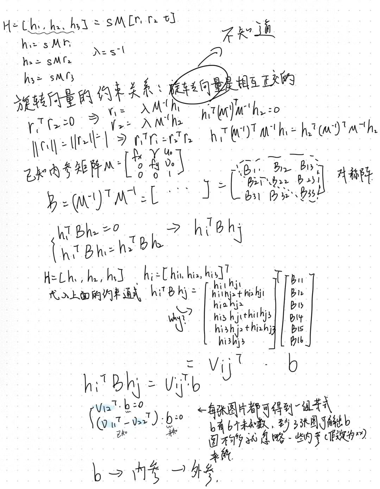
实际标定过程中，一般使用最大似然估计进行优化，最小化x, x'的位置来求解上述最大似然估计问题
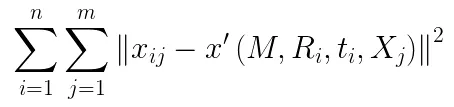
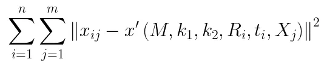
一般用LM法来求解
凸函数：一元二次可微函数，如果它的二阶导数是正的，那么该函数就是严格凸函数；多元二次可微函数，当它的Hessian矩阵是正定的时候，就是严格凸函数
梯度下降法：一阶收敛
牛顿法：Jacobian矩阵，Hessian矩阵，二阶收敛，目光更长远，但高维度下计算Hessian 矩阵需要消耗很大的计算量，很多时候甚至无法计算
高斯牛顿法：用雅克比矩阵的乘积近似代替牛顿法中的二阶Hessian 矩阵，可能是奇异矩阵或者病态的，此时会导致稳定性很差，算法不收敛。二阶泰勒展开来进行的推导，而泰勒展开只是在一个较小的范围内的近似，因此如果高斯牛顿法计算得到的步长较大的话，上述的近似将不再准确，也会导致算法不收敛。
Levenberg-Marquardt（LM）法：比起高斯牛顿法，牺牲一定的收敛速度，更鲁棒。搜索方法是信赖域（Trust Region）方法，前面的都是线性搜索方法
Summary
建立成像模型 → 构造单应关系 → 引入畸变修正 → 通过优化算法求解参数。这是相机标定的完整思考脉络。